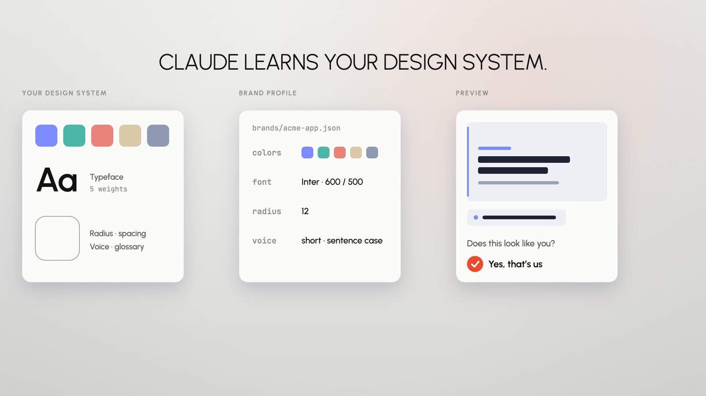
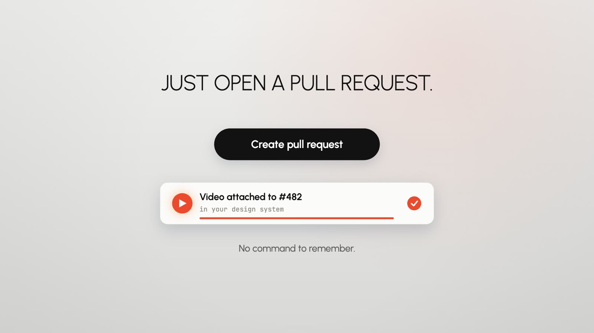
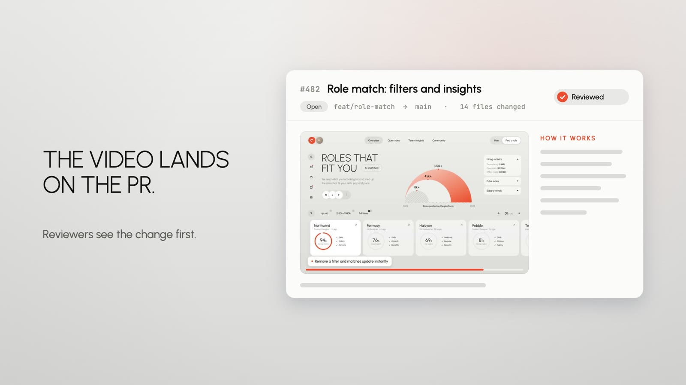
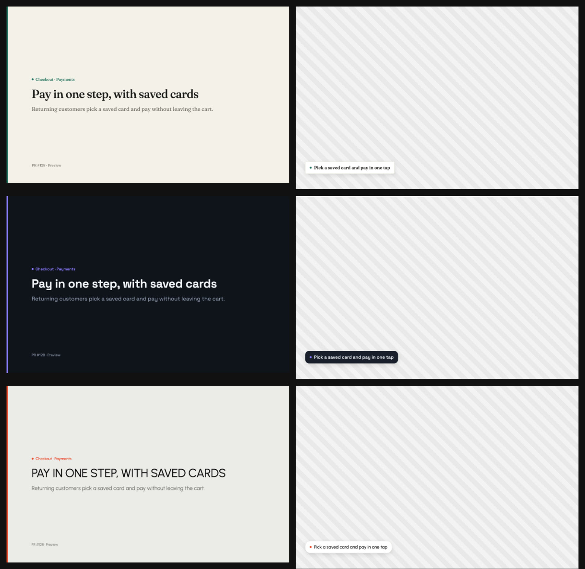

It learns your design system
Claude reads your tokens, fonts and tone, then asks once: does this look like you?
A skill for Claude Code
Set it up once. After that, every PR that changes the UI explains itself, with a short video in your own design system at the top of the description.
56 seconds, with sound and captions.
Set up https://github.com/Marinkayam/animatic for me.
Say it to Claude Code, inside your app's repo.

Claude reads your tokens, fonts and tone, then asks once: does this look like you?

Open a pull request and it starts by itself. No command to remember.

Reviewers see what changed for the user before they read a line.
